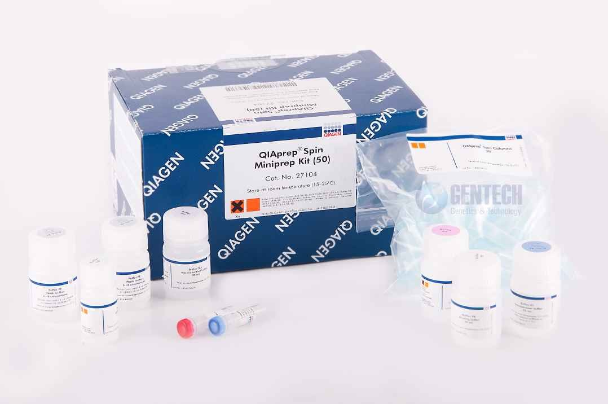

Step by step: Miniprep tutorial · bench cheatsheet
The second half is a silica column and three washes. The DNA binds in chaotropic salt, the protein comes off in one wash, the salt comes off in the next, and the dry spin gets rid of the ethanol that would otherwise ruin your sequencing read. The column half of a miniprep, run rather than listed: the lysate loaded, the DNA bound to the frit, three washes squirted in and spun through, a dry spin, the waste tube exchanged for a clean one, and the plasmid eluted into it.